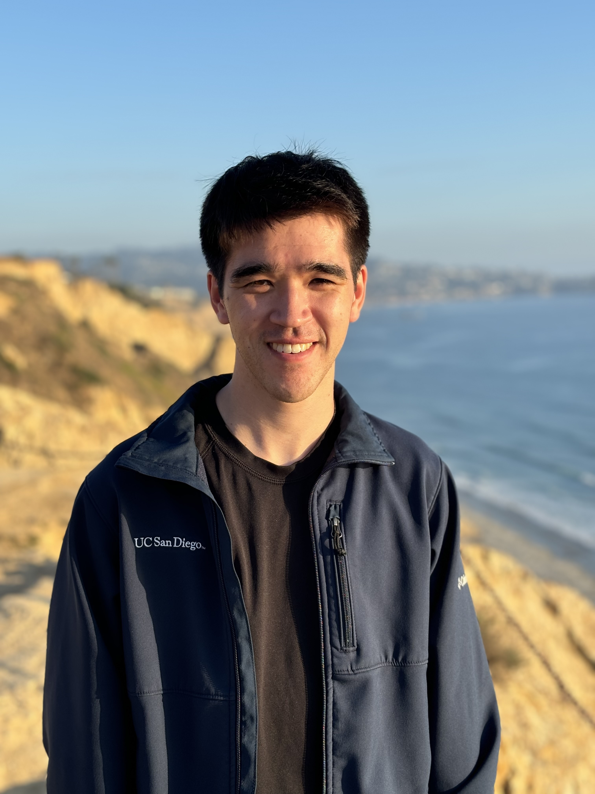

Researches differentiable geometry parameterization and geometric non-interference constraints for large-scale MDO, including applications to electric air taxis and blended-wing-body aircraft.
Education
- PhD, Mechanical and Aerospace Engineering
UC San Diego · 2021–present - BS, Aerospace Engineering
UC San Diego · 2021
Experience
- Intern
NASA Langley Research Center · 2021
Research connections
Related to Andrew H. Fletcher
Papers
- Andrew H. Fletcher, Hollis A. Smith, John T. Hwang. Efficient and Robust Enforcement of Geometric Non-Interference Constraints for Large-Scale Multidisciplinary Design Optimization. AIAA AVIATION 2026 Forum, AIAA 2026-4501 (AFRL public release), 2026. Distribution Statement A: Approved for public release; distribution is unlimited. PA# AFRL-2026-2044PDF
@inproceedings{fletcher2026efficient, author = {Andrew H. Fletcher and Hollis A. Smith and John T. Hwang}, title = {Efficient and Robust Enforcement of Geometric Non-Interference Constraints for Large-Scale Multidisciplinary Design Optimization}, booktitle = {AIAA AVIATION 2026 Forum, AIAA 2026-4501 (AFRL public release)}, year = {2026}, note = {Metadata verification: Crossref unavailable: HTTPError} } - Andrew H. Fletcher, John T. Hwang. Implicit Nonlinear Geometry Parameterization for Multidisciplinary Design Optimization. ASME IDETC/CIE 2026 · DETC2026-192508, 2026. Manuscript
- Marius L. Ruh, Michael A. P. Warner, Luca Scotzniovsky, Andrew H. Fletcher, Mark Z. Sperry, John T. Hwang. System-Level, Large-Scale Multidisciplinary Design Optimization of an Air Taxi Concept. Journal of Aircraft, 2026.DOIPDF
@article{ruh2026system, author = {Marius L. Ruh and Michael A. P. Warner and Luca Scotzniovsky and Andrew H. Fletcher and Mark Z. Sperry and John T. Hwang}, title = {System-Level, Large-Scale Multidisciplinary Design Optimization of an Air Taxi Concept}, journal = {Journal of Aircraft}, year = {2026}, pages = {1-24}, doi = {10.2514/1.c038533}, url = {https://doi.org/10.2514/1.c038533}, note = {Metadata verification: Crossref DOI} } - Luca Scotzniovsky, Nicholas C. Orndorff, Andrew H. Fletcher, Jason Kao, John T. Hwang. Large-Scale Multidisciplinary Design Optimization of a Blended Wing Body Aircraft Using Mid-Fidelity, Multi-Point Analysis. AIAA AVIATION 2026 Forum, 2026. Distribution Statement A: Approved for public release; distribution is unlimited. PA# AFRL-2026-2042DOIPDF
@inproceedings{scotzniovsky2026large, author = {Luca Scotzniovsky and Nicholas C. Orndorff and Andrew H. Fletcher and Jason Kao and John T. Hwang}, title = {Large-Scale Multidisciplinary Design Optimization of a Blended Wing Body Aircraft Using Mid-Fidelity, Multi-Point Analysis}, booktitle = {AIAA AVIATION 2026 Forum}, year = {2026}, doi = {10.2514/6.2026-4247}, url = {https://doi.org/10.2514/6.2026-4247}, note = {Metadata verification: Crossref title} } - Andrew Fletcher, Ru Xiang, Luca Scotzniovsky, Jacobo Cervera-Torralba, Michael T. Tolley, John T. Hwang. Multidisciplinary Control Co-Design Optimization of Anguilliform-Swimming Soft Fluidic Robots. IEEE International Conference on Soft Robotics (RoboSoft), 2025, 2025.PDF
@inproceedings{fletcher2025multidisciplinary, author = {Andrew Fletcher and Ru Xiang and Luca Scotzniovsky and Jacobo Cervera-Torralba and Michael T. Tolley and John T. Hwang}, title = {Multidisciplinary Control Co-Design Optimization of Anguilliform-Swimming Soft Fluidic Robots}, booktitle = {IEEE International Conference on Soft Robotics (RoboSoft)}, year = {2025} } - Andrew H. Fletcher, Ru Xiang, Jacobo Cervera-Torralba, Michael T. Tolley, John T. Hwang. Multidisciplinary Design Optimization of an Eel-Inspired Soft Robot. AIAA SciTech 2025 Forum; AIAA 2025-1751, 2025.PDF
@inproceedings{fletcher2025multidisciplinarya, author = {Andrew H. Fletcher and Ru Xiang and Jacobo Cervera-Torralba and Michael T. Tolley and John T. Hwang}, title = {Multidisciplinary Design Optimization of an Eel-Inspired Soft Robot}, booktitle = {AIAA SciTech 2025 Forum; AIAA 2025-1751}, year = {2025}, note = {Metadata verification: Crossref unavailable: HTTPError} } - Sebastiaan P. van Schie, Marius L. Ruh, Andrew H. Fletcher, Michael Warner, Mark Sperry, Luca Scotzniovsky, Nicholas C. Orndorff, Ru Xiang, Jiayao Yan, Han Zhao, Joshua Krokowski, Jiun-Shyan Chen, Darshan Sarojini, Hyunjune Gill, Seongkyu Lee, Andrew C. Tagg, Ryan Anderson, Eric Green, Cibin Joseph, Andrew Ning, Zeyu Cheng, Zhi Cao, Chunting Mi, Alexandre T. Guibert, Ashley Cronk, Alicia A. Kim, Shirley Meng, Christopher Silva, John T. Hwang. Large-Scale Distributed Multidisciplinary Design Optimization of the NASA Lift-Plus-Cruise Air Taxi Concept. AIAA SCITECH 2025 Forum, 2025.DOIPDF
@inproceedings{vanschie2025large, author = {Sebastiaan P. van Schie and Marius L. Ruh and Andrew H. Fletcher and Michael Warner and Mark Sperry and Luca Scotzniovsky and Nicholas C. Orndorff and Ru Xiang and Jiayao Yan and Han Zhao and Joshua Krokowski and Jiun-Shyan Chen and Darshan Sarojini and Hyunjune Gill and Seongkyu Lee and Andrew C. Tagg and Ryan Anderson and Eric Green and Cibin Joseph and Andrew Ning and Zeyu Cheng and Zhi Cao and Chunting Mi and Alexandre T. Guibert and Ashley Cronk and Alicia A. Kim and Shirley Meng and Christopher Silva and John T. Hwang}, title = {Large-Scale Distributed Multidisciplinary Design Optimization of the NASA Lift-Plus-Cruise Air Taxi Concept}, booktitle = {AIAA SCITECH 2025 Forum}, year = {2025}, doi = {10.2514/6.2025-0362}, url = {https://doi.org/10.2514/6.2025-0362}, note = {Metadata verification: Crossref title} } - Marius L. Ruh, Andrew Fletcher, Darshan Sarojini, Mark Sperry, Jiayao Yan, Luca Scotzniovsky, Sebastiaan P. van Schie, Michael Warner, Nicholas C. Orndorff, Ru Xiang, Anugrah J. Joshy, Han Zhao, Joshua Krokowski, Hyunjune Gill, Seongkyu Lee, Zeyu Cheng, Zhi Cao, Chris Mi, Christopher Silva, Lauren Wolfe, Jiun-Shyan Chen, John T. Hwang. Large-scale multidisciplinary design optimization of a NASA air taxi concept using a comprehensive physics-based system model. AIAA SCITECH 2024 Forum, 2024.DOIPDF
@inproceedings{ruh2024large, author = {Marius L. Ruh and Andrew Fletcher and Darshan Sarojini and Mark Sperry and Jiayao Yan and Luca Scotzniovsky and Sebastiaan P. van Schie and Michael Warner and Nicholas C. Orndorff and Ru Xiang and Anugrah J. Joshy and Han Zhao and Joshua Krokowski and Hyunjune Gill and Seongkyu Lee and Zeyu Cheng and Zhi Cao and Chris Mi and Christopher Silva and Lauren Wolfe and Jiun-Shyan Chen and John T. Hwang}, title = {Large-scale multidisciplinary design optimization of a NASA air taxi concept using a comprehensive physics-based system model}, booktitle = {AIAA SCITECH 2024 Forum}, year = {2024}, doi = {10.2514/6.2024-0771}, url = {https://doi.org/10.2514/6.2024-0771}, note = {Metadata verification: Crossref DOI} } - Sebastiaan P. van Schie, Michael Warner, Andrew Fletcher, John T. Hwang. Enforcing Work Conservation in Modular Aeroelastic Coupling For Multidisciplinary Design Optimization. AIAA SCITECH 2024 Forum, 2024.DOIPDF
@inproceedings{vanschie2024enforcing, author = {Sebastiaan P. van Schie and Michael Warner and Andrew Fletcher and John T. Hwang}, title = {Enforcing Work Conservation in Modular Aeroelastic Coupling For Multidisciplinary Design Optimization}, booktitle = {AIAA SCITECH 2024 Forum}, year = {2024}, doi = {10.2514/6.2024-2411}, url = {https://doi.org/10.2514/6.2024-2411}, note = {Metadata verification: Crossref DOI} } - Michael Warner, Andrew Fletcher, Sebastiaan P. van Schie, John T. Hwang. A Method for Modular MDO Model Assembly via a Solver Independent Field Representation. AIAA SCITECH 2024 Forum, 2024.DOIPDF
@inproceedings{warner2024method, author = {Michael Warner and Andrew Fletcher and Sebastiaan P. van Schie and John T. Hwang}, title = {A Method for Modular MDO Model Assembly via a Solver Independent Field Representation}, booktitle = {AIAA SCITECH 2024 Forum}, year = {2024}, doi = {10.2514/6.2024-1802}, url = {https://doi.org/10.2514/6.2024-1802}, note = {Metadata verification: Crossref DOI} } - Nicholas C. Orndorff, Bingran Wang, Marius L. Ruh, Andrew H. Fletcher, John T. Hwang. Gradient-Based Sizing Optimization of Power-Beaming-Enabled Aircraft. AIAA AVIATION 2023 Forum, p. 4019, 2023.DOIPDF
@inproceedings{orndorff2023gradient, author = {Nicholas C. Orndorff and Bingran Wang and Marius L. Ruh and Andrew H. Fletcher and John T. Hwang}, title = {Gradient-Based Sizing Optimization of Power-Beaming-Enabled Aircraft}, booktitle = {AIAA AVIATION 2023 Forum}, pages = {4019}, year = {2023}, doi = {10.2514/6.2023-4019}, url = {https://doi.org/10.2514/6.2023-4019} } - Marius L. Ruh, Darshan Sarojini, Andrew H. Fletcher, Isaac Asher, John T. Hwang. Large-Scale Multidisciplinary Design Optimization of the NASA Lift-Plus-Cruise Concept Using a Novel Aircraft Design Framework. VFS Autonomous VTOL Technical Meeting, Mesa AZ, Jan 24–26 2023; preprint arXiv:2304.14889, 2023.PDF
@inproceedings{ruh2023large, author = {Marius L. Ruh and Darshan Sarojini and Andrew H. Fletcher and Isaac Asher and John T. Hwang}, title = {Large-Scale Multidisciplinary Design Optimization of the NASA Lift-Plus-Cruise Concept Using a Novel Aircraft Design Framework}, booktitle = {VFS Autonomous VTOL Technical Meeting, Mesa AZ, Jan 24–26 2023; preprint arXiv:2304.14889}, year = {2023}, eprint = {2304.14889}, archiveprefix = {arXiv}, note = {Metadata verification: no high-confidence Crossref title match; numeric collision guard applied} } - Darshan Sarojini, Marius L. Ruh, Mark Sperry, Jiayao Yan, Andrew Fletcher, Anugrah Jo Joshy, Luca Scotzniovsky, Alexander Ivanov, Nicholas Orndorff, Victor Gandarillas, Isaac Asher, Jeff Chambers, Hyunjune Gill, Seongkyu Lee, Zeyu Cheng, Gabriel Rodriguez, Shuofeng Zhao, Chunting Mi, Thomas Nascenzi, Timothy Cuatt, Tyler Winter, Alexandre Guibert, Ashley Cronk, Alicia Kim, Shirley Meng, John T. Hwang. Large-Scale Multidisciplinary Design Optimization of an eVTOL Aircraft Using Comprehensive Analysis. AIAA SciTech 2023 Forum, 2023.PDF
@inproceedings{sarojini2023large, author = {Darshan Sarojini and Marius L. Ruh and Mark Sperry and Jiayao Yan and Andrew Fletcher and Anugrah Jo Joshy and Luca Scotzniovsky and Alexander Ivanov and Nicholas Orndorff and Victor Gandarillas and Isaac Asher and Jeff Chambers and Hyunjune Gill and Seongkyu Lee and Zeyu Cheng and Gabriel Rodriguez and Shuofeng Zhao and Chunting Mi and Thomas Nascenzi and Timothy Cuatt and Tyler Winter and Alexandre Guibert and Ashley Cronk and Alicia Kim and Shirley Meng and John T. Hwang}, title = {Large-Scale Multidisciplinary Design Optimization of an eVTOL Aircraft Using Comprehensive Analysis}, booktitle = {AIAA SciTech 2023 Forum}, year = {2023}, note = {Metadata verification: Crossref unavailable: HTTPError; numeric collision guard applied} } - Han Zhao, Xiangbei Liu, Andrew H. Fletcher, Ru Xiang, John T. Hwang, David Kamensky. An open-source framework for coupling non-matching isogeometric shells with application to aerospace structures. Computers & Mathematics with Applications, 2022.DOIPDF
@article{zhao2022open, author = {Han Zhao and Xiangbei Liu and Andrew H. Fletcher and Ru Xiang and John T. Hwang and David Kamensky}, title = {An open-source framework for coupling non-matching isogeometric shells with application to aerospace structures}, journal = {Computers & Mathematics with Applications}, year = {2022}, volume = {111}, pages = {109-123}, doi = {10.1016/j.camwa.2022.02.007}, url = {https://doi.org/10.1016/j.camwa.2022.02.007}, note = {Metadata verification: Crossref DOI} }